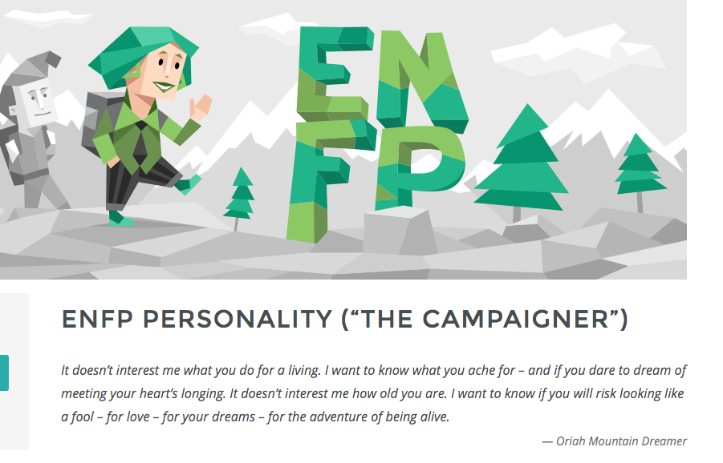

Personal Information
My name is Tom Nunan
Student number - s3722013
Email Address- tsnunan@gmail.com
Im from Melbourne, Australia, have completed year 12, and speak English!
So what I would say is some actually interesting things about me is that my passions/reasons for existence include Music. I can actually say that I enjoy at least one song from every genre of music. Also I love levelling up by learning so im always listening to podcasts. Also I love debating and questioning peoples viewpoints, I have always been one to question everything, even if it was to my own detriment, from an early age.
My interest in IT is due essentially to my interest in technology and love of learning. I have always been interested in the magical feeling of technology from an early age from television to video games to later seeing how it can/is used in all areas. I chose to go to RMIT because well the name Royal Institute of TECHNOLOGY sounds like they should be decent at anything technology related. I expect to learn practical skills that I will be able to take with me through the rest of my life.
https://www.indeed.com/viewjob?jk=d3da31a65902669c&tk=1d70ntipubhok802&from=serp&vjs=3

Job Description: This ‘Ideal Job’ that I have found is for a Software Engineer-Audio/Music Engineering at Apple in California. This job is particularly interesting to me because it combines a lot of my interests into one job. Working with both music and computers/technology is almost dreamlike. The skills/qualifications necessary would be
- knowledge with Objective-C
- Experience developing and shipping for IOS
- Experience developing and shipping for macOS
- Strong knowledge of XCode and related developer tools
- Music audio production skills, understanding musical concepts
- Playing an instrument
The skills/qualifications that I currently have are
- Music audio production skills, understanding musical concepts
- Playing an instrument
In order to obtain skills in Objective-C, Developing IOS, developing macOS and XCode tools, I would specialise in subjects that offer skills in these areas at university. YouTube tutorials and perhaps a working a job prior to this that could give me experience in working with these coding languages and developing skills.
Personal Profile
The results of the Myers-Briggs test for me, when taken multiple times, has consistently catagorised me as an ENFP personality type.
The learning-style test that I complete had me catagorised as an Auditory learner.
The Cambridge big 5 personality test has my strongest personality trait (85%) being ‘Openness’ and weakest personality trait (28%) being Agreeableness. I find these tests to all be fairly accurate in all honesty.

The results of these tests are more of an affirmation from an external source of what I already know about myself. It is quite interesting that I consistently get similar results each time I partake in these types of tests over the years.
In a team these results would show that I have the propensity to think outside the box but also that I will not be convinced easily into doing something that I do not agree with, but am happy to debate whether or not something should be done.
To take this information into account when forming a team, the best ‘team’ environment for me to work in would be one whereby differences of opinion are welcome, where there is elements of teamwork but also individual work and also where communication is mainly done in person through speaking.
PROJECT IDEA
The project that I would like to create would be a gaming console system with access to a cloud database of storage and games. This would be in competition to popular consoles like the PlayStation and Xbox, around a similar size and with similar styled controllers. This will be the first of its kind and a revolutionary system to the gaming world.
The reason as to why this ‘cloud integrated console’ will be so important is due to the numerous advantages it will have over current gaming systems and the ability for more features to be implemented via software updates due to the cloud based nature of the system. The game console markets is one of the most lucrative markets with 18 million PlayStation4 consoles being sold in 2017 alone. The problem with consoles however is the limited storage contained in the hardware as well as the outdated nature of purchasing disks.
Essentially our ‘cloud based console’ would be like the Netflix of gaming consoles. We would revolutionise the marketplace by eliminating many of the unnecessary features like hard disks and instead have an ‘all in one’ system and marketplace whereby storage would be upgradable. Thus putting more power in the consumers hands, allowing them to have more control of how much storage they will need for their personal usage of the system. Additionally our console will have an App store like marketplace whereby developers can upload their games directly onto the system. This would allow for consumers to have more access to the games. Furthermore games would load faster and run smoother due to the majority of the processing and running of the game as well as internet connections being linked to the main base cloud computing. The console will essentially be a transmitter system to a mainframe, allowing people to gain access to the impressive specifics of the mainframe system. Most games on the system would be free to pay other than potential in game purchases. But if a game is to offer in game purchases a cut of that will go to us, the system creators.
The technology needed to create such a system would be immense, expensive and would need a massive team and massive financial backing to achieve it. Potentially a FreeBSD based software could be used in the networking system. Would need maybe an IBM mainframe computer systems to host the cloud server and whatnot.
The skills required would be a team of experts in cloud computing, gaming development network management and hardware creation. Personally this is completely unfeasible to consider this to be an obtainable reality for me to obtain, I am just putting forward and idea.
If this project is successful, and such a console and system is created. It would be a complete game changer for the gaming industry. This has the potential, if made first to completely own the gaming industry market, due to no other system coming anywhere close to the impressiveness of out console. This is bound to happen in time due to the nature society is progressing in terms of the integration of cloud software and accessibility of technology and data.

the end